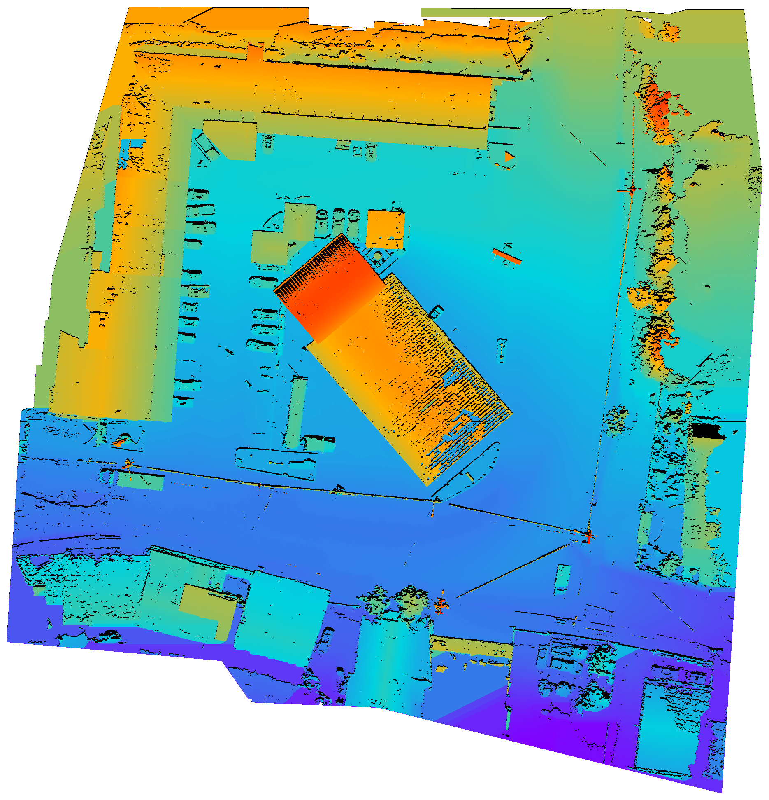

Nube de puntos, modelo texturizado, ortofoto y superficie
Visualización web para revisión topográfica y fotogramétrica.
El visor 3D concentra la nube de puntos y el modelo texturizado en una sola escena. Las capas 2D quedan separadas para consultar la ortofoto y el modelo digital de superficie con navegación fluida.
Visor 3D
Escena Potree con nube de puntos y modelo texturizado controlados desde un panel de capas contextual.

Ortofoto
Imagen ortorrectificada del proyecto para lectura planimétrica y contexto visual del sitio.

MDS
Modelo digital de superficie para revisar variación altimétrica y continuidad de la reconstrucción.
Documentos
Reporte de calidad del resultado fotogrametrico y documentos tecnicos asociados al proyecto.
Imagenes
Galeria agrupada por imagenes panoramicas e imagenes de vuelo drone con busqueda por numero.